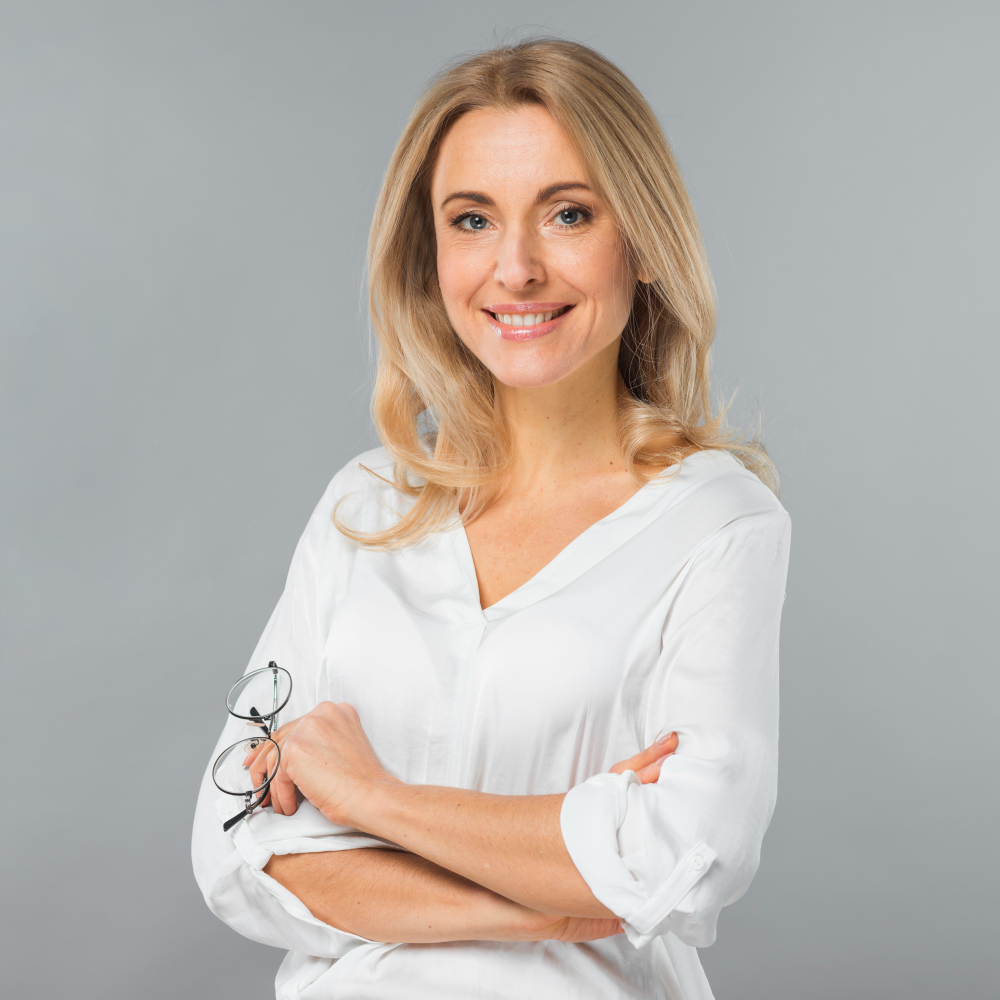
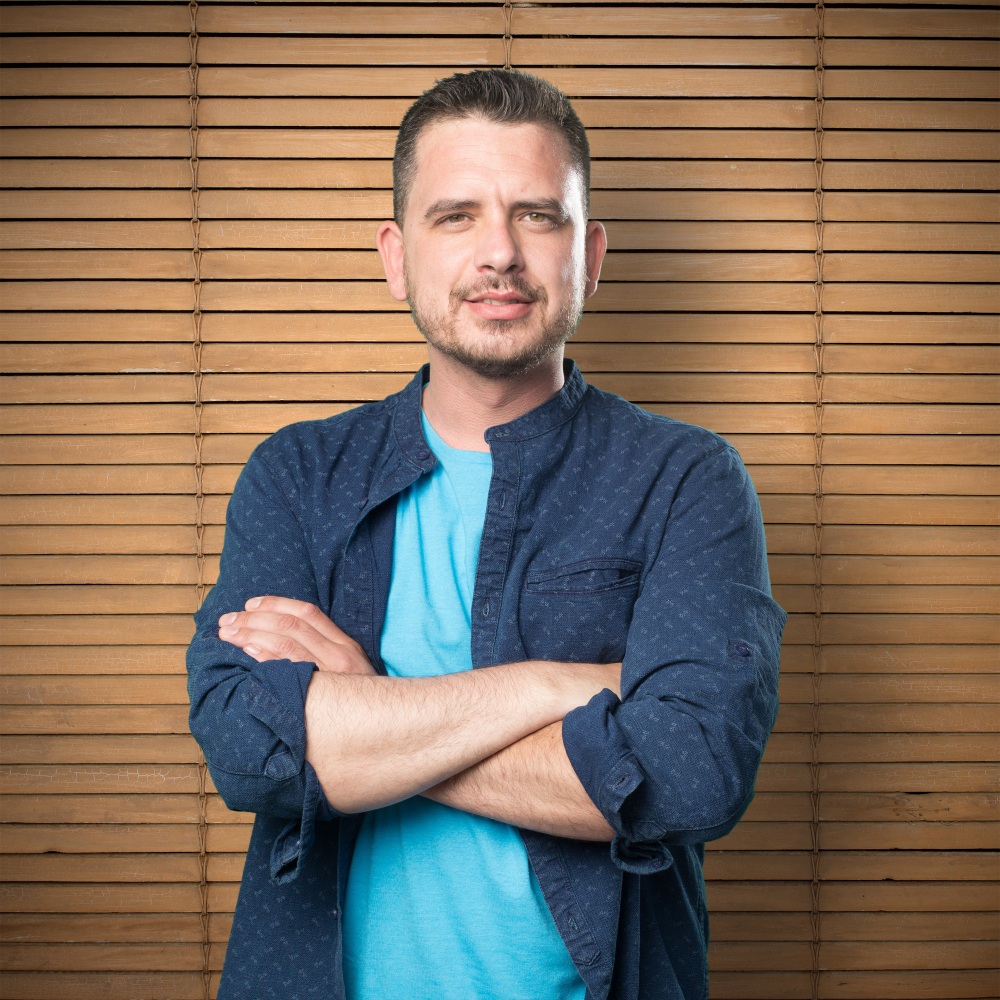
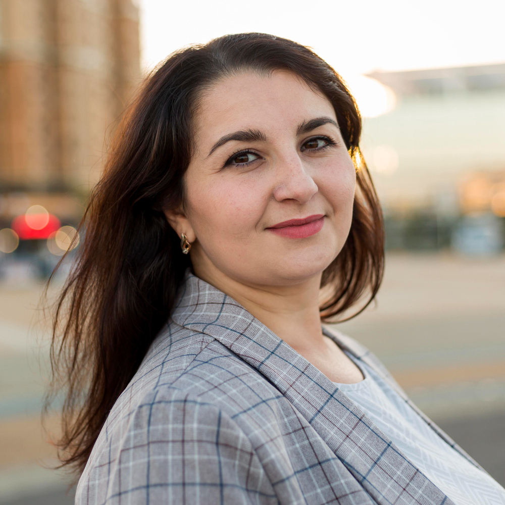
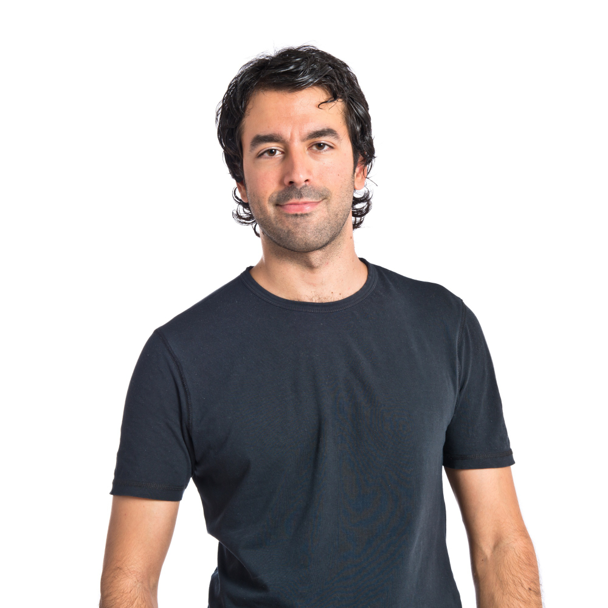
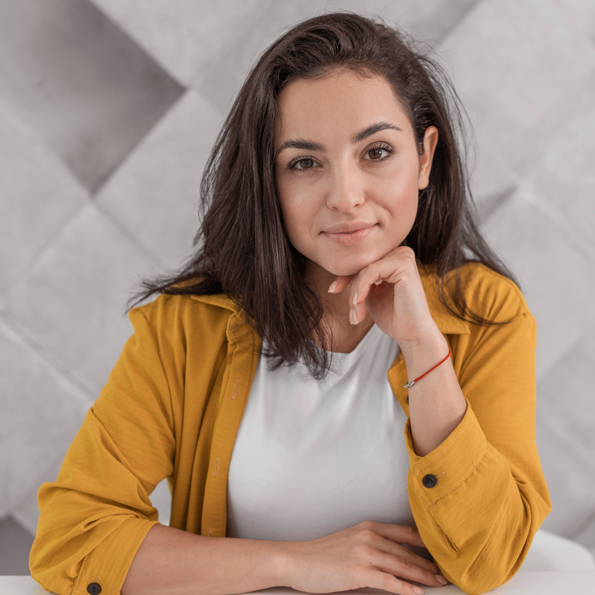

Invitados destacados
En esta nueva edición de la CookCon contamos con los mejores cocineros de cocina tradicional. Entre las ponencias a las que se pueden asistir destacamos las de los siguientes invitados:
Marcos Aguilera
Chef de Bideko (Lezama, Álava), cocina tradicional vasca

Laura Blázquez
Propietaria y chef de Gayarre (Zaragoza, Aragón), cocina tradicional aragonesa

José Molina
Chef de Casa Jaime (Peñíscola, Castellón), cocina tradicional valenciana

Marta Vallejo
Chef de El Portal de Echaurren (Ezcaray, La Rioja), cocina tradicional riojana

Alberto García
Propietario de Taberna Solana (Ampuero, Cantabria), cocina tradicional cantábrica.

Noelia Esteve
Chef de La Bota del Racó (Barcelona, Cataluña), cocina tradicional catalana